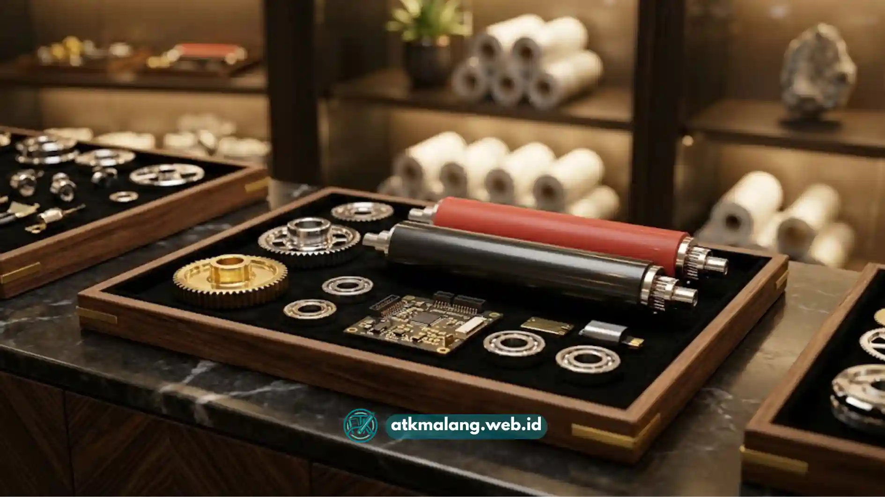

Mencari mesin laminating dengan harga terjangkau namun tetap berkualitas menjadi kebutuhan banyak pelaku usaha.
Usaha percetakan, fotokopi, maupun sekolah di wilayah Malang tentu membutuhkan dukungan mesin kantor yang andal.
Artikel ini membahas hal-hal penting yang perlu diperhatikan saat memilih toko dan produk mesin laminating murah di Malang.
Daftar Isi
Mengapa Garansi Penting Saat Membeli Mesin Laminating
Garansi menjadi salah satu faktor penentu utama dalam membeli berbagai macam peralatan elektronik.
Mesin yang digunakan secara rutin memiliki risiko mengalami kendala teknis seiring dengan lamanya pemakaian.
Kendala yang sering terjadi misalnya elemen pemanas yang mulai tidak stabil atau rol yang mulai aus.
Dengan adanya garansi, pembeli mendapatkan jaminan perbaikan atau penggantian komponen tanpa biaya tambahan.
Hal ini meminimalkan risiko kerugian akibat kerusakan dini, terutama bagi pelaku usaha yang bergantung padanya.
Toko perlengkapan dan Alat Tulis Kantor yang menawarkan garansi resmi biasanya lebih terpercaya.
Pentingnya Ketersediaan Sparepart Lengkap
Selain garansi, ketersediaan sparepart menjadi pertimbangan yang tidak kalah penting untuk jangka panjang.
Komponen seperti rol pemanas, kabel elemen, tombol pengatur suhu, dan roda gigi penggerak sangat vital.
Bagian-bagian tersebut adalah yang paling rentan mengalami keausan setelah pemakaian intensif sehari-hari.
Toko yang menyediakan sparepart lengkap memungkinkan proses perbaikan dilakukan dengan jauh lebih cepat.
Anda tidak perlu menunggu pemesanan dari luar kota atau bahkan luar negeri yang memakan waktu lama.
Ketersediaan ini sangat membantu operasional harian yang tidak boleh berhenti karena kendala alat.

Pastikan toko pilihan Anda menyediakan sparepart mesin laminating lengkap agar operasional usaha tidak terhambat.Ciri Toko Mesin Laminating yang Terpercaya di Malang
Toko yang terpercaya umumnya memiliki beberapa ciri berikut yang dapat menjadi acuan sebelum pembelian.
Pertama, toko memiliki lokasi fisik yang jelas dan dapat dikunjungi langsung oleh para calon pembeli.
Pembeli bisa melihat kondisi produk dan mengecek kualitas presisi hasil laminating melalui uji coba di tempat.
Kedua, toko menyediakan informasi spesifikasi produk secara detail dan transparan.
Informasi tersebut mencakup kapasitas ukuran kertas, ketebalan plastik, daya listrik, dan masa garansi.
Ketiga, toko memiliki teknisi atau layanan purna jual yang dapat dihubungi apabila terjadi kendala setelah pembelian.
Toko tersebut harus bisa membantu baik untuk konsultasi masalah teknis maupun pemesanan sparepart pengganti.
Keempat, toko memberikan kejelasan mengenai kebijakan garansi beserta cakupannya.
Penting untuk mengetahui apa saja yang termasuk garansi agar tidak terjadi kesalahpahaman di kemudian hari.
Tips Memilih Mesin Laminating Murah tanpa Mengorbankan Kualitas
Harga murah tidak selalu berarti kualitas rendah, namun Anda perlu ketelitian ekstra dalam memilih.
Perhatikan material bodi mesin, sebaiknya pilih yang menggunakan bahan cukup kokoh dan tidak terlalu ringan.
Material yang terlalu ringan sering kali menandakan komponen internal yang kurang optimal dan rentan rusak.
Perhatikan pula presisi rol pemanas atau rol tekan pada bagian dalam mesin laminating.
Mesin dengan rol presisi akan menghasilkan laminating yang rata tanpa gelembung udara maupun kerutan kertas.
Rol yang kurang presisi berisiko menghasilkan laminating yang tidak rapi meskipun prosedurnya sudah benar.
Bandingkan harga dari beberapa toko di Malang dengan spesifikasi pengadaan barang yang setara.
Pertimbangkan juga layanan tambahan seperti garansi dan ketersediaan sparepart sebagai bagian dari nilai keseluruhan.
Jangan hanya berpatokan pada harga jual semata tanpa memikirkan layanan purna jual yang diberikan toko.
Kebutuhan Mesin Laminating Berdasarkan Jenis Usaha
Untuk kebutuhan sekolah atau instansi dengan volume penggunaan yang tidak terlalu tinggi, pilih mesin standar.
Mesin laminating dengan kapasitas standar dan harga terjangkau umumnya sudah sangat mencukupi kebutuhan.
Sementara untuk usaha percetakan atau fotokopi, disarankan memilih mesin dengan kapasitas kerja lebih besar.
Usaha dengan volume laminating tinggi setiap hari akan mempercepat keausan komponen tertentu pada mesin.
Memilih toko mesin laminating murah di Malang sebaiknya tidak hanya berfokus pada harga perangkatnya saja.
Pertimbangkan layanan purna jual dan garansi resmi agar mesin dapat digunakan dalam jangka panjang.
Memilih toko mesin laminating yang tepat adalah investasi cerdas untuk usaha Anda. Toko dengan lokasi jelas, layanan purna jual yang responsif, garansi, serta kejelasan spesifikasi produk merupakan pilihan yang paling aman bagi kebutuhan usaha maupun penggunaan pribadi di wilayah Malang.